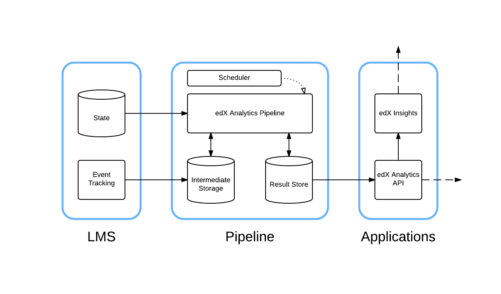
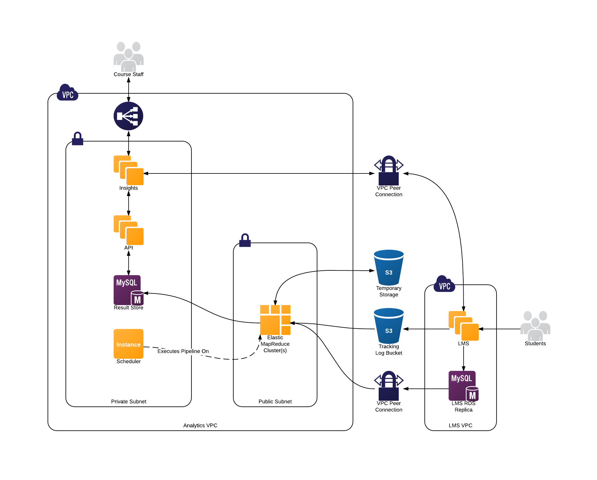

5.1. Options for Installing edX Insights#
This topic is intended for those who are interested in running edX Insights and its dependencies in a production environment. This topic does not provide complete installation procedures for edX Insights. It presents the introductory material that is available now.
5.1.1. Overview#
Course teams use edX Insights to access data gathered from active courses. In edX Insights, course teams can display charts, summary statistics, and data tables.
The Learning Management System (LMS) gathers data about learner activity. This data is aggregated by the edX Analytics Pipeline. The aggregated data is exposed by the edX Analytics Data API. EdX Insights reads the data from the edX Analytics Data API and presents the data to course team members.
5.1.1.1. Architecture Diagram#
{kind=link}
5.1.1.2. Components#
5.1.1.2.1. LMS#
The LMS records learner actions in tracking log files. The standard
logrotate utility periodically compresses and copies these files into a
file system that can be read by the edX Analytics Pipeline. The LMS also
captures a lot of information in a MySQL database. The edX Analytics Pipeline
connects directly to this database to extract information about learners.
5.1.1.2.2. edX Analytics Pipeline#
The edX Analytics Pipeline reads the MySQL database used by the LMS as well as the tracking log files produced by the LMS. The data is processed and the resulting summary data is published to the result store. The result store is a MySQL database.
5.1.1.2.2.1. Requirements#
5.1.1.2.3. Scheduler#
The Scheduler schedules the execution of data computation tasks. Data computation tasks are run by the edX Analytics Pipeline. Data computation tasks are used to update parts of the result store.
5.1.1.2.4. edX Analytics Data API#
The ref:opendataapi:edX Analytics Data API<edX Data Analytics API Overview> provides an HTTP interface for accessing data in the result store. Typically, the data in the result store is updated periodically by the edX Analytics Pipeline.
5.1.1.2.4.1. Requirements#
Python 2.7
5.1.1.2.5. edX Insights#
EdX Insights uses the edX Analytics Data API to present data to users. Users access the data using a supported web browser. EdX Insights communicates directly with the LMS to authenticate users, authorize users, and read course structure information.
5.1.1.2.5.1. Requirements#
Python 2.7
5.1.2. What You Should Know Before You Start#
To install edX Insights and deploy the edX Analytics Pipeline, you must understand the following concepts.
Basic terminal usage.
How the LMS has been deployed and configured.
Basic computer network terminology.
YAML file format.
If you plan to use Amazon Web Services, an understanding of AWS terminology is also required.
5.1.3. Planning Your Deployment#
All edX Analytics services are designed to be relocatable. This means that they do not require a particular configuration of virtual servers. You are free to choose how the services should be distributed among the resources you have available.
5.1.3.1. Hadoop#
Most of the computation performed by the edX Analytics Pipeline is implemented as Map Reduce jobs that must be executed by a Hadoop cluster. You can scale your Hadoop cluster based on your current and projected data sizes. Hadoop clusters can be scaled vertically and horizontally as your data grows. For very small installations of Open edX, a single virtual server should be sufficiently powerful to process your data.
Amazon’s Elastic MapReduce (EMR) service offers preconfigured Hadoop clusters. If you are able to use Amazon Web Services (AWS), use of this service is recommended. Proper installation and configuration of Hadoop can be time consuming. For more information, see Using Elastic MapReduce on AWS.
Additionally, vendors such as Cloudera and MapR offer simplified Hadoop administration experiences.
Hadoop is a distributed system that consists of several different services. It is worth noting that they are Java services and require a non-trivial amount of memory to run. The high memory requirement might prevent you from running all services on the same virtual server if it does not have enough memory available.
5.1.3.2. edX Applications#
The edX Analytics Data API responds to a small number of requests every time a page is loaded in edX Insights. Small installations can probably host both services on the same virtual server. Larger installations should consider hosting the services on more than one virtual server. A load balancer is recommended for each service that requires more than one virtual server.
5.1.3.3. Result Store#
The results of computations performed by the edX Analytics Pipeline are stored in a MySQL database. Even small installations should use a different MySQL server than the one used by the LMS. The edX Analytics Pipeline’s write patterns to the result store are more I/O intensive than usual. Placing both databases on the same server can degrade the performance of the LMS.
5.1.3.4. Scheduler#
Scheduling executions of the edX Analytics Pipeline can be accomplished in many different ways. Any tool that can periodically execute shell commands should work. The simplest tool that can perform this task is cron. Jenkins is also a good candidate.
5.1.4. Example Deployments#
5.1.4.1. Small Scale Using Elastic MapReduce#
A small deployment might consist of a single master node and a single core node. The Scheduler is deployed to the master node and periodically executes the edX Analytics Data Pipeline on this server. Additionally, the edX Analytics API, edX Insights and result store are deployed to the master node. These services run continuously. For more information, see Using Elastic MapReduce on AWS.
5.1.4.2. Large Scale Using Elastic MapReduce#
A large scale deployment consists of a single master node, several core nodes, and many task nodes deployed into a public subnet of a Virtual Private Cloud.
The edX Analytics API and edX Insights are each deployed into an auto-scaling group behind an Elastic Load Balancer which terminates SSL connections and distributes the load among the application servers. The application servers are deployed into a private subnet of the Virtual Private Cloud. A single virtual server is deployed into a private subnet to host the Scheduler. The Relational Database Service is used to deploy a MySQL server into a private subnet. The MySQL database will be used as the result store. For more information, see Using Elastic MapReduce on AWS.
5.1.4.3. Large Scale Without Using Elastic MapReduce#
A large deployment that does not use Elastic MapReduce requires additional configuration steps to establish a properly configured environment. A Hadoop cluster is deployed. The master node is considered the node that is running the Job Tracker service for Hadoop 1.X deployments or the Resource Manager service for Hadoop 2.X deployments. Hive and Sqoop are deployed to the master node. Several servers are deployed outside of the Hadoop cluster that host the remainder of the infrastructure. The edX Analytics API and edX Insights services are each deployed to at least one server. The Scheduler is deployed to another server. A MySQL database is deployed to a server that is configured to host a relational database.